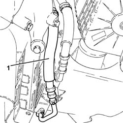
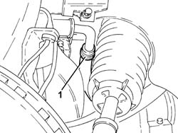
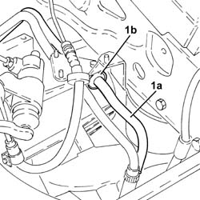

4130B70 TUBAZIONE INTERMEDIA DI RITORNO TRA SCATOLA SERVOSTERZO E SCAMBIATORE DI CALORE/RADIATORE RAFFREDDAMENTO LIQUIDO SERVOSTERZO - S.R.
- Path
- Procedures > 41 STEERING UNIT > 4130 POWER STEERING > 4130B POWER STEERING HYDRAULIC SYTEM > 4130B70 TUBAZIONE INTERMEDIA DI RITORNO TRA SCATOLA SERVOSTERZO E SCAMBIATORE DI CALORE/RADIATORE RAFFREDDAMENTO LIQUIDO SERVOSTERZO - S.R.
- Kind
- repair procedure (removal / refitting; the operation number is the code)
- Applies to
- engines: 3.2 V6; all production periods
- Interactive page
- https://sloeber94.github.io/elrnDB-aGt/en/#/125001419
Applies to: engines: 3.2 V6; all production periods
 Removing
Removing
 Refitting
RefittingPosition the vehicle on the ramp
Proceed with removal
Op. 4450B02 LEFT FRONT WHEEL R R
Proceed with removal
1. Loosen the band and disconnect the cooling radiator power assisted steering fluid inlet pipe, rigid pipe side.
Op. 7055B54 UNDER-ENGINE GUARD - R R

Applies to: engines: 3.2 V6; all production periods
1. Working from the left wheel arch, loosen the band and disconnect the return pipe from the power assisted steering box to the intermediate pipe, rigid intermediate pipe side.

Applies to: engines: 3.2 V6; all production periods
Proceed with removal
Proceed with removal
1. Remove the intermediate rigid return pipe between the power assisted steering casing and the power assisted steering fluid radiator (1a) after having released it from the retaining bands (1b).
Op. 5530B52 BATTERY DRIP TRAY/SUPPORT - R.R.

Applies to: engines: 3.2 V6; all production periods
Refitting
RemovingRefit the rigid intermediate return pipe between the power steering box and the power assisted steering fluid radiator and fasten it to the bands.
Proceed with refitting
Op. 5530B52 BATTERY DRIP TRAY/SUPPORT - R.R..
Proceed with refitting
Connect the return pipe from the power assisted steering box to the intermediate pipe, rigid intermediate pipe side, and tighten the band.
Connect the power assisted steering fluid inlet pipe to the cooling radiator, rigid pipe side and tighten the band.
Proceed with refitting
Op. 7055B54 UNDER-ENGINE GUARD - R R.
Proceed with refitting
Op. 4450B02 LEFT FRONT WHEEL R R.
Fill the power steering circuit with the recommended fluid.
 | Type | Component | Name | Qty. |
|---|---|---|---|---|
- | Fluid [l] | HYDRAULIC POWER ASSISTED STEERING SYSTEM | TUTELA GI/A | 1.2 |
Bleed the power steering system as described below
With the front wheels raised off the ground, with the engine switched off turn the steering wheel to full lock, left and right, 4-5 times.
Check and, if necessary, top up the fluid level in the reservoir.
Remove the car from the ramps.
Start the engine and carry out 4 - 5 full steering wheel turn cycles (right and left).
Top up the fluid level in the reservoir.